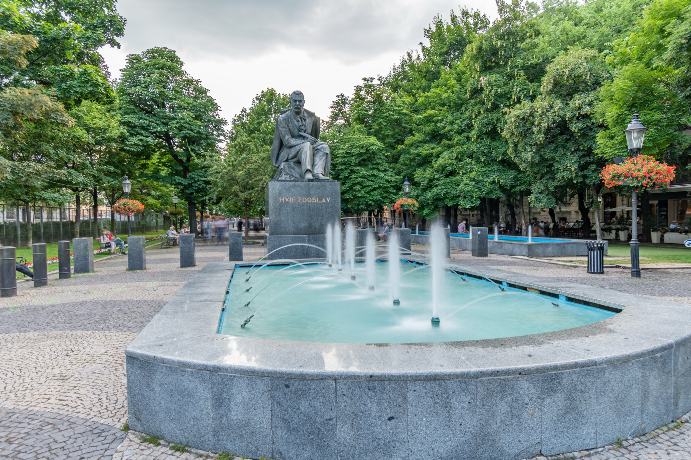

Places, light, and the moment between
Ronda, between worlds
Andalucía, Spain
Selected work
Photography that lets a place breathe.
Travel, architecture, coastlines, and lived-in spaces—observed patiently and presented without getting between you and the image.
 SeriesSpainPlaza de España, Seville
SeriesSpainPlaza de España, Seville
 SeriesFranceThe Louvre, Paris
SeriesFranceThe Louvre, Paris
 SeriesItalyFlorence
SeriesItalyFlorence
 SeriesUSASolana Beach
SeriesUSASolana Beach
 SeriesMexicoPuerto Vallarta
SeriesMexicoPuerto Vallarta
 SeriesPortugalCascais
SeriesPortugalCascais

SeriesSlovakiaBratislava